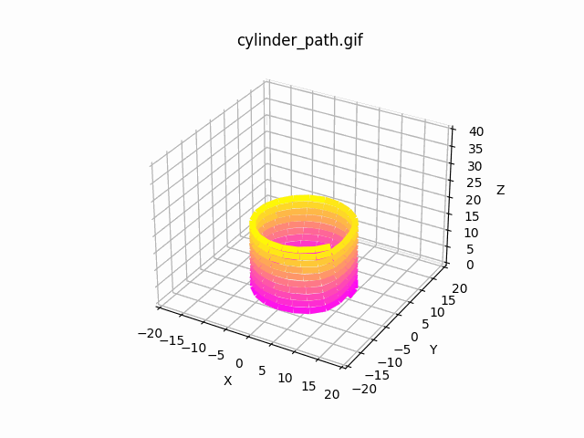

PBD Simulation for 3D Printed Structures

PBD Simulation for 3D Printed Structures
This project explores the use of Position-Based Dynamics (PBD) to simulate the structural behavior and collapse patterns of 3D printed architectures, particularly focusing on concrete-like materials. The goal is to capture critical physical phenomena such as layer stiffening due to curing and the detection of potential structural collapse.
Core Features:
- Particle Representation: The 3D printed structure is modeled as a network of particles. Each particle represents a point along a pre-generated path (imported from a CSV) and holds properties like position, velocity, mass, radius, and an age attribute that simulates the curing process.
- Layer & Age Assignment: Particles are grouped into layers based on their z-coordinate. An artificial age is assigned to each particle relative to its layer, mimicking real-world curing where older layers stiffen over time. This age influences material stiffness and plasticity.
- Spring Constraints:
To simulate structural integrity:
- Primary Springs connect consecutive particles along the printing path, maintaining the basic shape.
- Secondary Springs link nearby particles (within a defined radius) to add lateral support. The stiffness and plasticity of these springs are age-dependent, allowing the simulation to capture curing effects.
- Dynamics & Constraint Projection: The simulation employs Euler integration with gravity, updating particle positions while enforcing boundary conditions. Multiple passes of constraint projection ensure the springs maintain appropriate lengths. Collision handling prevents particle overlap.
- Collapse Detection: The system monitors total kinetic energy as an indicator of structural stability. A sudden spike in energy beyond a configurable threshold triggers a collapse event, freezing the simulation and highlighting failure points.
- Output & Visualization: The simulation outputs the evolving particle positions over time, generating animated GIFs that visually demonstrate the structure’s deformation and collapse.